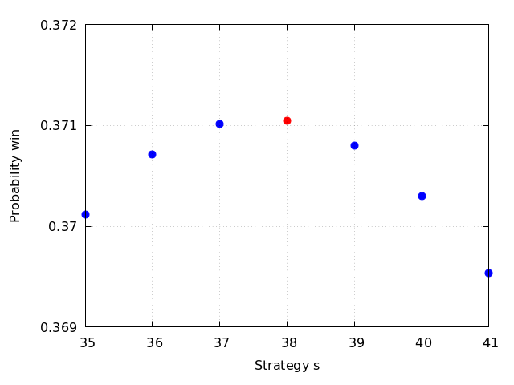

aez-notes
Choosing the Largest Dowry
The king, to test a candidate for the position of wise man, offers him a chance to marry the young lady in the court with the largest dowry. The amounts of the dowries are written on slips of paper and mixed. A slip is drawn at random and the wise man must decide whether that is the largest dowry or not. If he decides it is, he gets the lady and her dowry if he is correct; otherwise he gets nothing. If he decides against the amount written on the first slip, he must choose or refuse the next slip, and so on until he chooses one of else the slips are exhausted. In all, 100 attractive young ladies participate, each with a different dowry. How should the wise man make his decision?
The answer given in the book considers a family of strategies indexed by a parameter \(s\). The strategy is to let the first \(s-1\) pass and then select the first one larger than anything seen in those first \(s-1\). The probability of winning this this strategy is computed and then the largest value of \(s\) is selected.
Suppose the largest value is at position \(k\). This occurs with probability \(1/n\). The probability that the largest of the first \(k-1\) draws occurs in the first \(s-1\) is \((s-1)/(k-1)\). Hence the probability that the maximum is encountered under the correct conditions when at the \(k\)-th position is \((s-1)/(n(k-1))\). The valid values of \(k\) in this setting are \(s\) through to \(n\) so we do the sum to get the correct probability and then find the best \(s\).
winning_prob(s, n) := sum((s - 1) / (n * (k - 1)), k, s, n); for s:35 step 1 thru 40 do { print([s,float(winning_prob(s, 100))]) }; /* [35, 0.3701169592460237] [36, 0.3707086345179656] [37, 0.3710145955041932] [38, 0.3710427787126431] [39, 0.3708006916508226] [40, 0.3702954466942652] */

I suspect this is not the absolute optimal strategy.
x_vals : [35,36,37,39,40,41]; y_vals : map(lambda([s], winning_prob(s, 100)), x_vals); plot2d( [[discrete, x_vals, y_vals],[discrete, [38], [winning_prob(38,100)]]], [style, points], [color, blue, red], [legend, false], [point_type, bullet], [box, true], grid2d, [axes, solid], [xtics, 35, 1, 41], [ytics, 0.36, 0.001, 0.38], [y, 0.369, 0.372], [xlabel, "Strategy s"], [ylabel, "Probability win"], [png_file, "./problem-47.png"])$